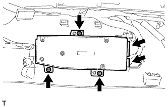
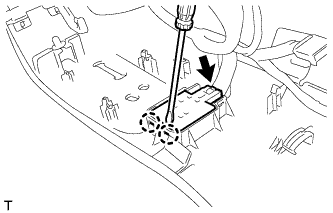
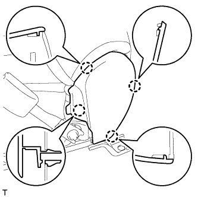
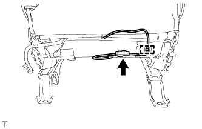
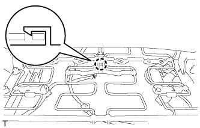
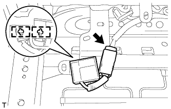
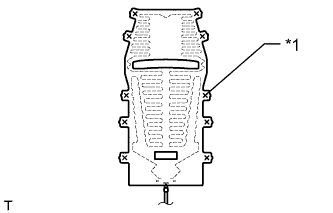

ПЕРЕДНЕЕ СИДЕНЬЕ В СБОРЕ (с электроприводом) > РАЗБОРКА |
| 1. СНИМИТЕ РУЧКУ ПЕРЕКЛЮЧАТЕЛЯ ЭЛЕКТРОПРИВОДА ПЕРЕМЕЩЕНИЯ СИДЕНЬЯ ПО НАПРАВЛЯЮЩИМ И ПО ВЕРТИКАЛИ |
 |
С помощью съемника молдингов отцепите 2 захвата и снимите ручку.
| 2. СНИМИТЕ РУЧКУ ПЕРЕКЛЮЧАТЕЛЯ ЭЛЕКТРОПРИВОДА НАКЛОНА СИДЕНЬЯ |
 |
С помощью съемника молдингов отцепите 2 захвата и снимите ручку.
| 3. СНИМИТЕ ЗАЩИТНЫЙ ЩИТОК ПОДУШКИ ЛЕВОГО ПЕРЕДНЕГО СИДЕНЬЯ |
Отсоедините разъем электродвигателя подъема.
Выверните винт внутреннего защитного щитка подушки переднего сиденья № 1 и отсоедините направляющую.
Освободите фиксатор внутреннего защитного щитка подушки переднего сиденья № 1.
С помощью съемника молдингов освободите 3 захвата и направляющую.
Переместите защитный щиток подушки в направлении, указанном стрелкой, чтобы освободить фиксатор и снять внутренний защитный щиток подушки переднего сиденья 1 с защитным щитком подушки как единый узел.

 |
Освободите 3 захвата и откройте крышку жгута проводов.
Освободите 3 зажима жгута проводов и отсоедините разъем жгута проводов сиденья.
| 4. СНИМИТЕ ПЕРЕКЛЮЧАТЕЛЬ ЭЛЕКТРОПРИВОДА ЛЕВОГО ПЕРЕДНЕГО СИДЕНЬЯ |
Выверните 3 винта.
|  |
для моделей с запоминающими устройствами сидений:
Отсоедините 2 разъема переключателя электропривода сиденья и снимите переключатель.
 |
для моделей без запоминающих устройств сидений:
Отсоедините разъем переключателя электропривода сиденья и снимите переключатель.
| 5. СНИМИТЕ ПЕРЕКЛЮЧАТЕЛЬ ЭЛЕКТРОПРИВОДА ОПОРЫ ПОЯСНИЦЫ (со стороны водителя) |
|  |
С помощью отвертки расцепите 2 захвата.
Отсоедините разъем переключателя электропривода опоры поясницы и снимите переключатель электропривода опоры поясницы.
| 6. СНИМИТЕ ВНУТРЕННИЙ ЗАЩИТНЫЙ ЩИТОК № 1 ПОДУШКИ ЛЕВОГО ПЕРЕДНЕГО СИДЕНЬЯ |
 |
Отцепите 2 захвата и снимите защитный щиток подушки.
| 7. СНИМИТЕ ВНУТРЕННИЙ ЗАЩИТНЫЙ ЩИТОК ПОДУШКИ ЛЕВОГО ПЕРЕДНЕГО СИДЕНЬЯ |
 |
С помощью съемника молдингов освободите 3 захвата и снимите защитный щиток подушки.
| 8. СНИМИТЕ ВНУТРЕННИЙ ЗАЩИТНЫЙ ЩИТОК ПОДУШКИ ПРАВОГО ПЕРЕДНЕГО СИДЕНЬЯ (со стороны переднего пассажира) |
|  |
С помощью съемника молдингов освободите 4 захвата и снимите защитный щиток подушки.
| 9. СНИМИТЕ ЗАМОК РЕМНЯ БЕЗОПАСНОСТИ ЛЕВОГО ПЕРЕДНЕГО СИДЕНЬЯ В СБОРЕ |
Со стороны водителя:
Отсоедините разъем и освободите 4 зажима.
Со стороны переднего пассажира:
Отсоедините 2 разъема и освободите 3 зажима.
 |
Отверните гайку и снимите замок ремня безопасности переднего сиденья.
| 10. СНИМИТЕ СПИНКУ ПЕРЕДНЕГО РАЗДЕЛЬНОГО СИДЕНЬЯ В СБОРЕ |
 |
Снимите резиновую ленту с пружины подушки сиденья.
Освободите зажим и отсоедините жгут проводов сиденья № 2.
|  |
Для моделей с системой подогрева сидений:
Отсоедините разъем подогревателя сиденья и освободите зажим жгута проводов подогревателя сиденья.
 |
Отцепите 2 крюка.
Для моделей с боковой подушкой безопасности переднего сиденья:
Освободите захват и отсоедините разъем подушки безопасности.
Освободите 3 зажима жгута проводов подушки безопасности.
Отсоедините крепежную ленту и откройте крышку.
| *1 | Крепежная лента |
Отсоедините жгут проводов подушки безопасности.
Выверните 4 болта и снимите спинку сиденья в сборе.
| 11. СНИМИТЕ КОЛПАЧОК |
Снимите 2 колпачка.
| 12. СНИМИТЕ НАКЛАДКУ НОЖЕК ЛЕВОГО ПЕРЕДНЕГО СИДЕНЬЯ |
 |
Освободите 2 захвата.
Переместите накладку в направлении, указанном на рисунке стрелкой, чтобы снять ее.
| 13. СНИМИТЕ ОБИВКУ ПОДУШКИ СИДЕНЬЯ ВМЕСТЕ С ПОДУШКОЙ |
 |
Для моделей с системой подогрева сидений:
Отсоедините разъем подогревателя сиденья и освободите 3 зажима жгута проводов подогревателя сиденья.
Отсоедините крепления.
|  |
Со стороны переднего пассажира:
Освободите захват и отсоедините разъем
Снимите обивку подушки сиденья вместе с подушкой.
| 14. СНИМИТЕ ОБИВКУ ПОДУШКИ РАЗДЕЛЬНОГО ПЕРЕДНЕГО СИДЕНЬЯ |
 |
Снимите витковые пружины и обивку подушки сиденья с подушки сиденья.
| 15. СНИМИТЕ ПОДОГРЕВАТЕЛЬ ПОДУШКИ ЛЕВОГО ПЕРЕДНЕГО СИДЕНЬЯ В СБОРЕ (для моделей с системой подогрева сидений) |
 |
Срежьте закрепки и снимите подогреватель подушки переднего сиденья с обивки подушки переднего сиденья.
| *1 | Стяжка |
| 16. СНИМИТЕ ЛЕВУЮ ВНУТРЕННЮЮ КРЫШКУ РЕГУЛЯТОРА НАКЛОНА |
 |
Освободите захват и направляющую, а затем снимите накладку.
| 17. СНИМИТЕ ЛЕВЫЙ НИЖНИЙ ЗАЩИТНЫЙ ЩИТОК ПОДУШКИ ПЕРЕДНЕГО СИДЕНЬЯ |
 |
Выверните винт.
Освободите крепление и фиксатор, а затем снимите защитный щиток подушки.
| 18. СНИМИТЕ ПРАВЫЙ НИЖНИЙ ЗАЩИТНЫЙ ЩИТОК ПОДУШКИ ПЕРЕДНЕГО СИДЕНЬЯ |
Выверните винт.
Освободите крепление и фиксатор, а затем снимите защитный щиток подушки.
| 19. СНИМИТЕ КРАЕВОЕ УКРЕПЛЕНИЕ ПОДУШКИ ЛЕВОГО ПЕРЕДНЕГО СИДЕНЬЯ |
Выверните винт.
Переместите защитный элемент в направлении, указанном на рисунке стрелкой, чтобы освободить крепление, и снимите защитный элемент.
| 20. СНИМИТЕ КРАЕВОЕ УКРЕПЛЕНИЕ ПОДУШКИ ПРАВОГО ПЕРЕДНЕГО СИДЕНЬЯ |
| 21. СНИМИТЕ БЛОК УПРАВЛЕНИЯ ПОДОГРЕВАТЕЛЕМ ЛЕВОГО СИДЕНЬЯ В СБОРЕ (для моделей с системой подогрева сидений) |
|  |
Отсоедините разъем.
Освободите 2 зажима и снимите блок управления подогревателем сиденья.
| 22. СНИМИТЕ ЖГУТ ЭЛЕКТРОПРОВОДКИ ЛЕВОГО ПЕРЕДНЕГО СИДЕНЬЯ |
Снимите жгут проводов сиденья.
| 23. СНИМИТЕ ЛЕВУЮ ВНУТРЕННЮЮ КРЫШКУ РЕГУЛЯТОРА НАКЛОНА |
 |
Отсоедините направляющую и снимите щиток.
| 24. СНИМИТЕ ПРАВУЮ ВНУТРЕННЮЮ КРЫШКУ РЕГУЛЯТОРА НАКЛОНА |
Отсоедините направляющую и снимите щиток.
| 25. СНИМИТЕ ОБИВКУ СПИНКИ РАЗДЕЛЬНОГО ПЕРЕДНЕГО СИДЕНЬЯ |
 |
Снимите 3 витковые пружины.
Откройте 2 крепления, а затем откройте обивку спинки сиденья.

| *A | для сиденья с тканевой обивкой | *B | для сиденья с кожаной обивкой |
 |
Для моделей с боковой подушкой безопасности переднего сиденья:
Отверните гайку и снимите держатель обивки спинки сиденья с рамы сиденья.
Отсоедините держатель обивки спинки сиденья от подушки спинки сиденья.
 |
С помощью отвертки отцепите 4 захвата и снимите 2 держателя подголовника.
 |
Снимите витковые пружины и обивку спинки сиденья.
| 26. СНИМИТЕ ПОДОГРЕВАТЕЛЬ СПИНКИ ЛЕВОГО ПЕРЕДНЕГО СИДЕНЬЯ В СБОРЕ (для моделей с системой подогрева сидений) |
|  |
Срежьте закрепки, крепящие подогреватель спинки сиденья к обивке спинки сиденья, а затем снимите подогреватель спинки сиденья с обивки спинки сиденья.
| *1 | Стяжка |
| 27. СНИМИТЕ ПОДУШКУ СПИНКИ ПЕРЕДНЕГО РАЗДЕЛЬНОГО СИДЕНЬЯ |
Снимите подушку спинки сиденья.
| 28. СНИМИТЕ ЖГУТ ЭЛЕКТРОПРОВОДКИ СИДЕНЬЯ № 2 |
Со стороны водителя:
Отсоедините 2 разъема.
Со стороны переднего пассажира:
Отсоедините разъем.
Освободите 2 зажима и снимите жгут проводов сиденья.